Apéritif (53 recettes)
 1 avis
♡
1 avis
♡
ApéritifBoissons
Lillet Tonic {cocktail}
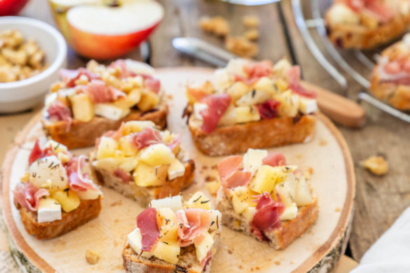
1 avis ♡ApéritifBrunchSalé
Tartines pommes poires Brie et jambon cru Aoste
 ♡
♡
ApéritifBoissons
Margarita à la mangue et goyave
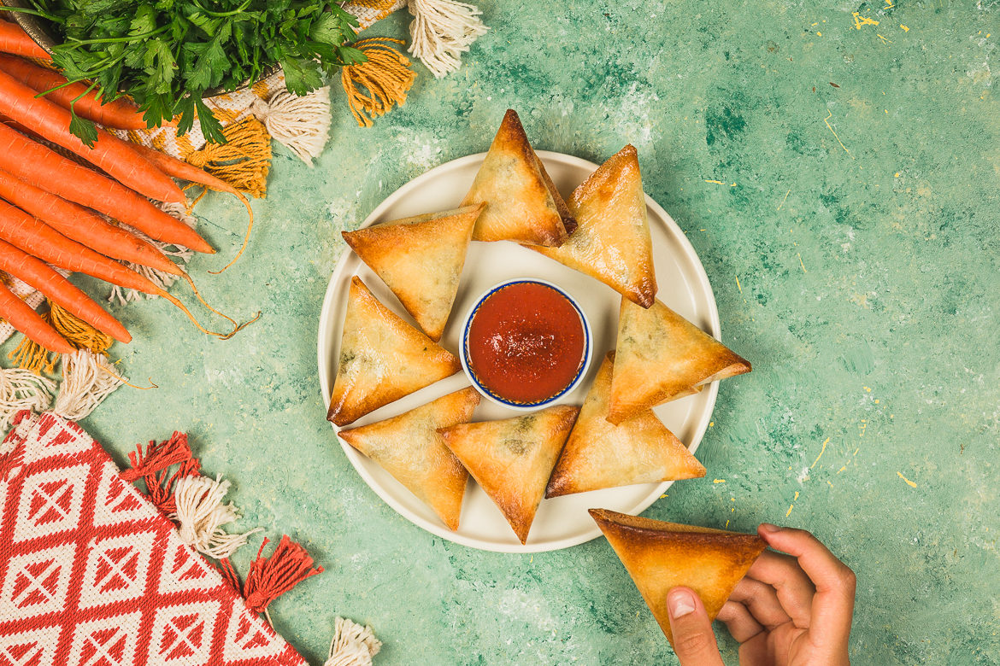
1 avis ♡ApéritifSalé
Samoussas orientales
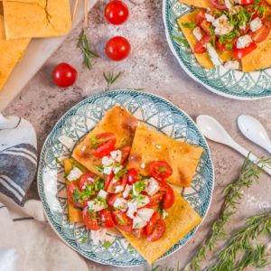
7 avis ♡ApéritifBoulangeBrunch
Socca au four
5 avis
♡
ApéritifBrunchRecettes Végétariennes
Gaspacho Andalou
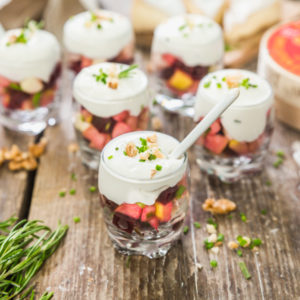
2 avis ♡ApéritifBrunchSalé
Verrines pomme, betterave et camembert Jort
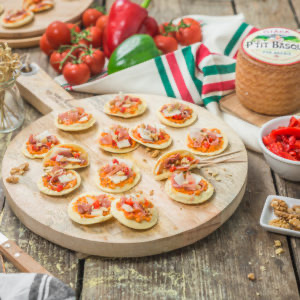
5 avis ♡ApéritifRepas du mondeSalé
Mini taloas au P’tit Basque d’Istara
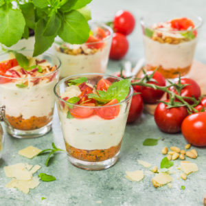
4 avis ♡ApéritifBrunchSalé
Tiramisu au parmesan et pesto rosso (aux tomates)
 5 avis
♡
5 avis
♡
ApéritifRecettes VégétariennesSalé
Houmous de patates douces à la noisette
10 avis
♡
ApéritifBrunchDe la mer
Mini croissants apéro au saumon
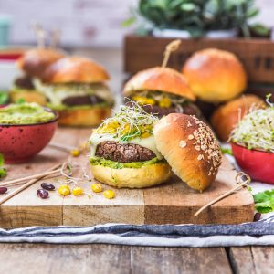
16 avis ♡ApéritifBoulangeBrunch
Burger végétarien aux haricots rouges
2 avis
♡
ApéritifRecettes VégétariennesSalé
Tartines salées aux haricots blancs
 1 avis
♡
1 avis
♡
ApéritifRepas LightSalé
Veggie bagel
10 avis
♡
ApéritifBrunchSalé
Croissants salés au fromage, pesto et figues
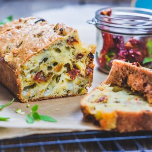
9 avis ♡ApéritifSaléTartes salées
Cake tomates séchées comté pistaches
13 avis
♡
ApéritifBrunchSalé
Tartine de truite fumée et chèvre frais
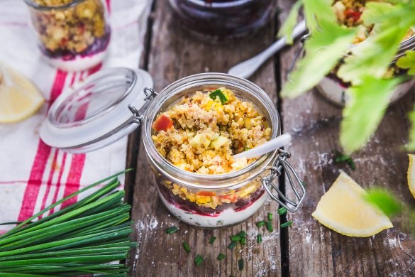
17 avis ♡ApéritifRepas LightSalade
Verrine de quinoa au chèvre frais et petits légumes
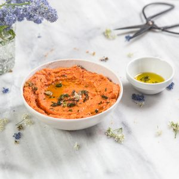
21 avis ♡ApéritifRepas du mondeRepas Light
Houmous de poivrons
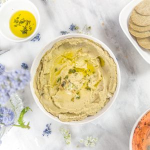
6 avis ♡ApéritifRepas du mondeRepas Light
Houmous d’avocat
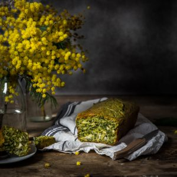
18 avis ♡ApéritifSaléTartes salées
Cake chèvre épinards et amandes
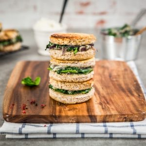
14 avis ♡ApéritifRepas LightSalé
Croque-monsieur épinards ricotta
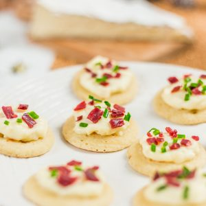
19 avis ♡ApéritifNoëlSalé
Blinis à la crème de brie
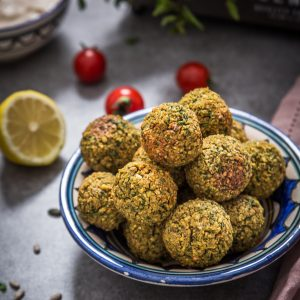
42 avis ♡ApéritifRepas du mondeRepas Light
Falafels au four
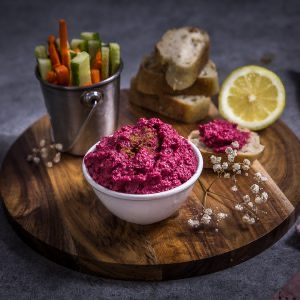
25 avis ♡ApéritifRepas LightSalé
Houmous de betterave
 11 avis
♡
11 avis
♡
ApéritifDe la merRepas du monde
Croquetas de seiche
13 avis
♡
ApéritifBrunchDe la mer
Scones salés
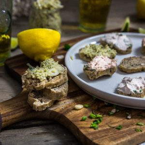
10 avis ♡ApéritifSalé
Rillettes d’artichauts aux amandes
6 avis
♡
ApéritifDe la merSalé
Rillettes de thon au citron
17 avis
♡
ApéritifDe la merSalé
Rillettes de saumon
5 avis
♡
ApéritifRepas du mondeSalé
Quesadillas au poulet
14 avis
♡
ApéritifSaléTartes salées
Tarte soleil saumon aneth
 11 avis
♡
11 avis
♡
ApéritifBoissonsSalé
Cocktail le sunflower et tapas pour un bon slow-drinker
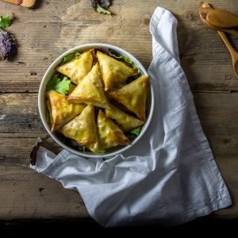
29 avis ♡ApéritifSalé
Samoussas raclette poire coppa
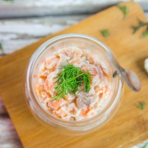
8 avis ♡ApéritifDe la merNoël
Verrines aux deux saumons
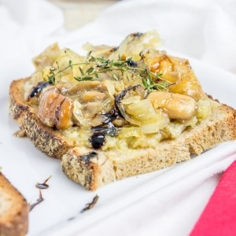
9 avis ♡ApéritifNoëlSalé
Bruschetta aux champignons
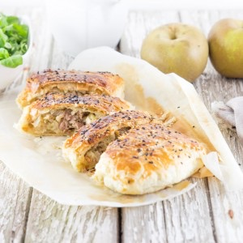
10 avis ♡ApéritifNoëlPâques
Friand au fromage
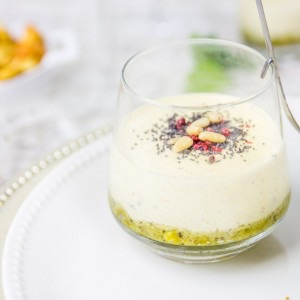
34 avis ♡ApéritifNoëlSalé
Verrine apéritive façon tiramisu de crevettes
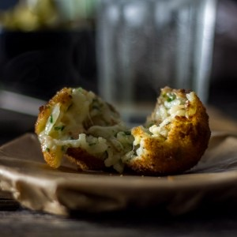
12 avis ♡ApéritifRepas du mondeSalé
Arancini aux crevettes
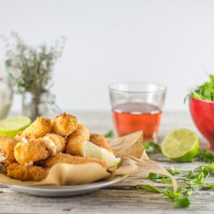
18 avis ♡ApéritifRepas du mondeSalé
Croquetas au jambon Serrano
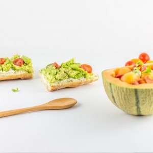
3 avis ♡ApéritifBrunchSalé
Tartines d'avocats
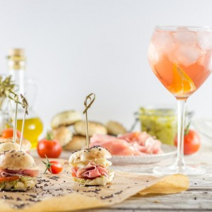
33 avis ♡ApéritifSalé
Minis bagels jambon, mozzarella, pesto, tomates
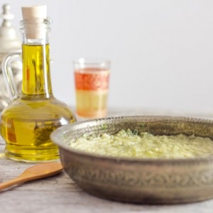
25 avis ♡ApéritifRepas du mondeSalé
Baba ganoush
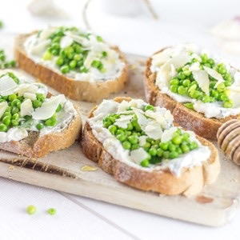
20 avis ♡ApéritifSaléTartines et Bruschettas
Bruschetta ricotta miel menthe et petits pois
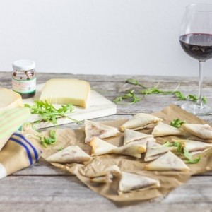
33 avis ♡ApéritifSalé
Samoussas Ossau Iraty confiture de cerises noires
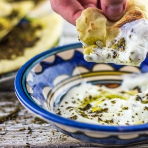
36 avis ♡ApéritifRepas du mondeSalé
Labne : mon fromage maison pour un petit déjeuner parfait
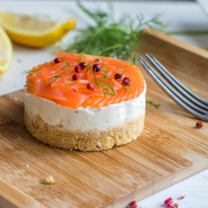
44 avis ♡ApéritifDe la merNoël
Cheesecake Saumon
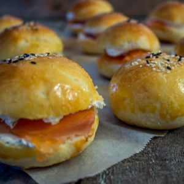
16 avis ♡ApéritifDe la merHamburgers
Minis hamburgers saumon-aneth-cream cheese
21 avis
♡
ApéritifDe la merSalé
Samoussas à pleins de bonnes choses
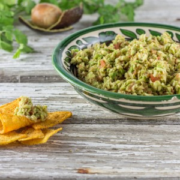
15 avis ♡ApéritifRepas du mondeSalé
Guacamole maison
 25 avis
♡
25 avis
♡
ApéritifCupcakesCupcakes, cake pops & co
Minis cupcakes au chorizo, oignons caramélisés et parmesan {Battle food #21}
 4 avis
♡
4 avis
♡
ApéritifBoissonsSalé
Verrine concombre-feta-menthe
14 avis
♡
ApéritifSalé